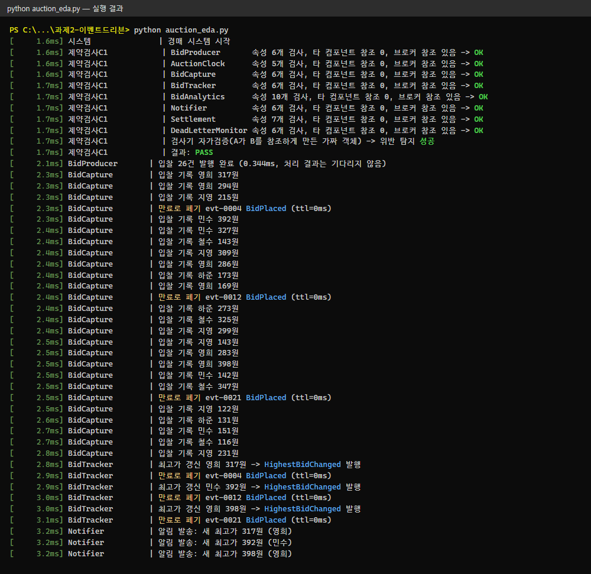
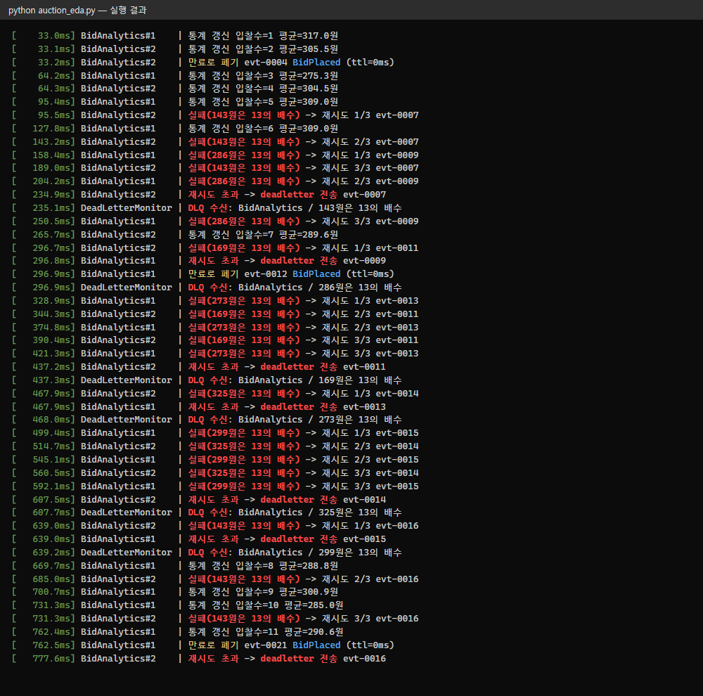
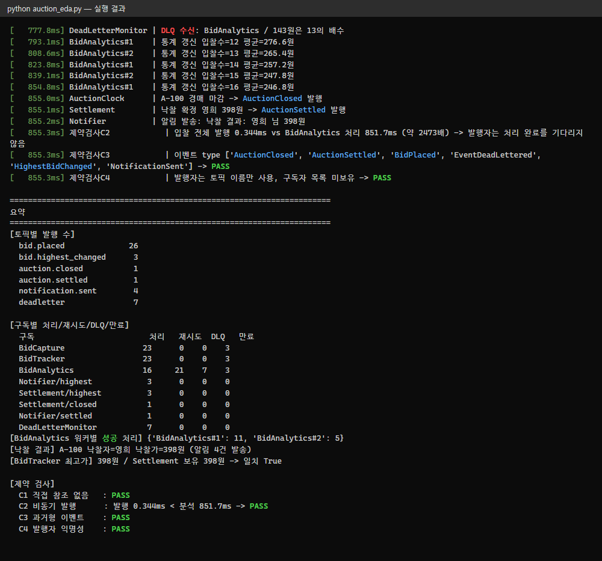

| 과목 | 소프트웨어아키텍처설계 |
| 학번 | 202110914 |
| 이름 | 김대진 |
| 제출일 | 2026년 10월 25일 |
Claude Code(Claude Opus 5.5)에 아래 두 프롬프트를 주어 설계·구현했습니다. 프롬프트 2의 구현은 Claude Code가 띄운 Sonnet 서브에이전트가 맡았고, 결과 코드를 검토해 로그 문구 한 곳을 고쳤습니다.
이벤트 드리븐 아키텍처 스타일을 가지는 시스템 구현 (시스템의 규모보다 이벤트 드리븐 아키텍처 스타일의 컴포넌트, 커넥터, 제약조건을 정확히 따르는 것이 중요함) 제출 내용: 1. 사용한 프롬프트 2. 시스템 주요 구성 컴포넌트를 포함한 전체 동작 흐름 3. 실행 결과 캡쳐 4. 기타 시스템 설명에 필요한 내용
Python 3 표준 라이브러리(asyncio)만 써서, "브로커 토폴로지 이벤트 드리븐 아키텍처"를 따르는
온라인 경매 시스템을 하나의 실행 가능한 프로그램으로 구현해 줘. 규모는 작아도 되지만
이벤트 드리븐 스타일의 컴포넌트·커넥터·제약조건을 정확히 지켜야 한다.
[도메인]
입찰자가 물건에 입찰한다. 입찰 프로듀서가 만든 입찰 이벤트를 입찰 캡처, 입찰 추적,
입찰 분석 서비스가 각자 받아 처리한다. 경매가 끝나면 낙찰 처리를 한다.
[컴포넌트]
1. 이벤트 브로커(EventBroker): 이벤트를 "전달만" 한다. 워크플로우 판단·비즈니스 로직 금지.
- 이벤트 채널 = 토픽. 한 브로커에 여러 토픽(bid.placed, bid.highest_changed,
auction.closed, auction.settled, notification.sent, deadletter)을 둔다.
- 구독(subscription)마다 자기 큐를 가진다. 같은 토픽의 구독자들은 서로 간섭 없이
각자 속도로 소비한다(발행/구독).
- 같은 구독 이름으로 워커를 여러 개 붙이면 한 큐를 나눠 소비한다(경쟁 소비자 = 그 프로세서만 확장).
2. 이벤트 발행자(시작 이벤트): BidProducer(입찰자 입찰 → BidPlaced), AuctionClock(마감 → AuctionClosed).
3. 이벤트 구독자(이벤트 프로세서): 처리 후 "처리 이벤트"를 발행할 수 있다.
- BidCapture: 모든 입찰을 기록한다.
- BidTracker: 최고가를 추적하고, 최고가가 바뀌면 HighestBidChanged를 발행한다.
- BidAnalytics: 느린 통계 처리(입찰 수, 평균가). 워커 2개로 확장한다.
- Notifier: HighestBidChanged·AuctionSettled를 받아 알림을 보내고 NotificationSent를 발행한다.
- Settlement: AuctionClosed를 받아 낙찰자를 확정하고 AuctionSettled를 발행한다.
(최고가 정보는 BidTracker를 호출하지 말고 자신이 구독한 이벤트로 스스로 유지한다.)
[커넥터]
- 통신 메커니즘: 브로커의 publish/subscribe와 구독별 asyncio.Queue.
- 데이터 형식 변환(어댑터): 이벤트는 JSON 문자열로 직렬화해 채널에 넣고, 꺼낼 때 역직렬화한다.
- 이벤트 봉투(envelope): event_id, type(과거형 이름), topic, timestamp, ttl, payload.
[제약조건 — 반드시 지키고 코드로 검사]
C1. 컴포넌트끼리 직접 참조·호출하지 않는다. 브로커를 통해서만 통신한다.
실행 시작 시 각 컴포넌트의 속성을 검사해 다른 컴포넌트 참조가 없음을 확인하고 결과를 출력한다.
C2. 비동기 통신: publish는 기다리지 않고 즉시 반환한다. 발행자는 처리 결과를 기다리지 않는다.
입찰 발행에 걸린 시간과 분석 처리에 걸린 시간을 비교해 출력한다.
C3. 이벤트는 이미 일어난 사실(과거형)이고 응답을 요구하지 않는다.
C4. 익명성: 발행자는 구독자를 모른다(토픽만 안다).
[메시지 전달 신뢰성]
- 승인(ack): 구독자가 처리를 끝내면 ack한다. 예외가 나면 최대 3번 재시도하고,
그래도 실패하면 deadletter 토픽으로 보낸다.
- 만료(TTL): 만료된 이벤트는 처리하지 않고 버린 뒤 로그를 남긴다.
- 내고장성 시연: BidAnalytics가 특정 입찰(금액이 13의 배수)에서 일부러 실패하게 하고,
다른 구독자는 영향 없이 계속 처리됨을 보인다.
[실행·출력]
- `python auction_eda.py` 한 번으로 끝까지 돌고 5초 안에 종료한다. random seed 고정.
- 콘솔에 시각(경과 ms)·컴포넌트·이벤트를 한 줄씩 한국어로 출력한다. UTF-8로 출력한다.
- 마지막에 요약(토픽별 발행 수, 구독별 처리·재시도·DLQ·만료 수, 낙찰 결과, 제약 검사 결과)을 표로 출력한다.
- 같은 내용을 run_log.txt로도 저장한다.
- 파일은 auction_eda.py 하나. 클래스·메서드에 짧은 한국어 주석을 단다.
온라인 경매는 입찰이 동시에 많이 들어옵니다. 입찰 하나를 기록·추적·분석·알림 서비스가 각자 처리해야 하므로 응답성·확장성·기능확장성이 중요합니다. 그래서 발행자와 구독자를 떼어 놓는 이벤트 드리븐 스타일을 골랐습니다.
흐름이 단순하고 처리 서비스끼리 순서를 맞출 필요가 거의 없으므로 중재자 대신 브로커 토폴로지를 썼습니다. 브로커는 워크플로우를 제어하지 않고 이벤트를 전달만 합니다.
| 구분 | 스타일의 요소 | 이 시스템의 구현 |
|---|---|---|
| 컴포넌트 | 이벤트 발행자 (시작 이벤트) | BidProducer(입찰 → BidPlaced), AuctionClock(마감 → AuctionClosed) |
| 이벤트 브로커 | EventBroker: 토픽 6개와 구독별 큐를 관리합니다. 비즈니스 로직은 없습니다. | |
| 이벤트 구독자 (처리 후 처리 이벤트 발행 가능) | BidCapture, BidTracker, BidAnalytics(워커 2개), Notifier, Settlement, DeadLetterMonitor | |
| 커넥터 | 이벤트 채널 | 토픽 6개: bid.placed, bid.highest_changed, auction.closed, auction.settled, notification.sent, deadletter |
| 통신 메커니즘 | publish()/subscribe(), 구독마다 하나씩 있는 asyncio.Queue | |
| 데이터 형식 변환 (어댑터) | Envelope.dumps()/loads(): 이벤트를 JSON 문자열로 바꿔 채널에 넣고, 꺼낼 때 객체로 되돌립니다. 봉투 필드는 event_id, type, topic, timestamp, ttl, payload입니다. | |
| 제약조건 | C1 컴포넌트끼리 직접 참조·호출하지 않음 | 모든 컴포넌트는 broker만 가집니다. 실행 시작 때 속성을 검사합니다. |
| C2 비동기 통신 | publish()는 put_nowait로 바로 반환합니다. 발행자는 처리 결과를 기다리지 않습니다. | |
| C3 이벤트 = 이미 일어난 사실, 응답을 요구하지 않음 | 이벤트 이름이 모두 과거형입니다(BidPlaced, AuctionClosed …). 반환값을 쓰지 않습니다. | |
| C4 익명성 (발행자는 구독자를 모름) | 발행자는 토픽 이름만 압니다. 구독자 목록은 브로커 안에만 있습니다. |
| 토픽 | 이벤트 | 발행자 | 구독자 |
|---|---|---|---|
bid.placed | BidPlaced | BidProducer | BidCapture, BidTracker, BidAnalytics |
bid.highest_changed | HighestBidChanged | BidTracker | Notifier, Settlement |
auction.closed | AuctionClosed | AuctionClock | Settlement |
auction.settled | AuctionSettled | Settlement | Notifier |
notification.sent | NotificationSent | Notifier | (없음 — 외부 연계용으로 열어 둠) |
deadletter | EventDeadLettered | 구독 워커(재시도 초과) | DeadLetterMonitor |
괄호 안 시각은 3장 실행 결과의 경과 시간입니다.
BidProducer가 입찰 26건을 bid.placed에 발행합니다. 발행 전체가 0.344ms 만에 끝나고, 처리 결과는 기다리지 않습니다(2.1ms).bid.placed의 구독 큐 3개(Capture·Tracker·Analytics)에 각각 넣습니다. 구독자는 자기 큐를 자기 속도로 소비합니다.BidCapture가 입찰을 기록합니다. BidTracker는 최고가가 바뀔 때마다 처리 이벤트 HighestBidChanged를 발행합니다(317원 → 392원 → 398원).HighestBidChanged를 구독한 Notifier가 알림을 보냅니다. Settlement는 BidTracker를 호출하지 않고 이 이벤트로 자기 최고가를 유지합니다. 마지막 알림 시각은 3.2ms입니다.BidAnalytics는 워커 2개가 한 큐를 나눠 처리합니다. 13의 배수 입찰에서 일부러 실패하면 3번 재시도한 뒤 deadletter로 보내고(첫 DLQ 235.1ms), DeadLetterMonitor가 받아 기록합니다. 다른 구독자는 이미 처리를 끝냈습니다.AuctionClock이 AuctionClosed를 발행합니다(855.0ms). Settlement가 낙찰자를 확정해 AuctionSettled를 발행하고, Notifier가 결과를 알립니다(855.2ms).python auction_eda.py를 한 번 실행한 콘솔 출력입니다(Python 3.14, Windows 11, 약 1초). 출력 138줄 전체를 세 장으로 나눠 실었습니다. 화면은 콘솔 출력을 터미널 화면으로 그려 캡처한 것이고, 같은 내용이 run_log.txt에 저장됩니다.



| 제약 | 확인 방법 | 결과 |
|---|---|---|
| C1 직접 참조 없음 | 각 컴포넌트의 속성(vars())을 재귀로 훑어 다른 컴포넌트 객체·바운드 메서드가 있는지 찾습니다. 검사기 자체가 동작하는지 보려고 일부러 A가 B를 참조하게 만든 객체로 위반을 잡아내는 자가검증도 합니다. | PASS |
| C2 비동기 발행 | 입찰 26건 발행 시간(0.344ms)과 BidAnalytics 처리 시간(851.7ms)을 비교합니다. 발행이 처리 완료를 기다렸다면 발행 시간이 처리 시간보다 길어야 합니다. | PASS |
| C3 과거형 이벤트 | 실제로 발행된 이벤트 type 6종이 모두 과거형인지 검사합니다. | PASS |
| C4 익명성 | 발행자 객체에 구독(Subscription) 정보가 없는지 검사합니다. | PASS |
task_done()으로 승인합니다. 예외가 나면 최대 3번 재시도합니다.deadletter 토픽으로 보내 잃지 않습니다. 실행 결과는 7건이었습니다.| 품질속성 | 실행 결과에서 보이는 근거 |
|---|---|
| 응답성·성능 | 발행자는 0.344ms 만에 반환했습니다. 입찰자 알림은 3.2ms에 끝났고, 느린 분석(851.7ms)을 기다리지 않았습니다. |
| 내고장성 | BidAnalytics가 7건에서 실패하는 동안에도 BidCapture·BidTracker·Notifier는 23건을 모두 처리했습니다. |
| 확장성 | 느린 BidAnalytics만 워커 2개로 늘렸고(#1 11건, #2 5건), 다른 서비스는 바꾸지 않았습니다. |
| 기능확장성 | 새 구독자(예: DeadLetterMonitor)는 생성자에서 listen()으로 토픽을 구독하기만 하면 됩니다. 발행자 코드는 바뀌지 않습니다. |
broker.drain()으로 큐가 빈 뒤에 마감 이벤트를 발행했습니다. 실제로는 마감 직전 입찰이 Settlement에 늦게 도착하면 낙찰자가 틀릴 수 있습니다(데이터 비일관성). 대책은 입찰 시각을 마감 시각과 비교하거나, 마감·낙찰 흐름만 중재자로 관리하는 것입니다.publish/subscribe만 쓰므로 브로커만 교체하면 됩니다.| 파일 | 내용 |
|---|---|
auction_eda.py | 시스템 전체(표준 라이브러리만 사용, 401줄). python auction_eda.py로 실행합니다. |
run_log.txt | 실행 출력 저장본 |
prompt.md | 1장의 프롬프트 원문 |
1"""브로커 토폴로지 이벤트 드리븐 온라인 경매 시스템 (표준 라이브러리 asyncio만 사용).""" 2import asyncio 3import json 4import os 5import random 6import sys 7import time 8from dataclasses import dataclass, asdict, field 9 10MAX_RETRY = 3 # 처리 실패 시 최대 재시도 횟수 11SEED = 20261025 # 난수 고정 12T0 = time.perf_counter() 13LOG: list[str] = [] 14 15 16def log(who: str, msg: str) -> None: 17 """시각(경과 ms)·컴포넌트·내용을 한 줄로 출력하고 보관한다.""" 18 line = f"[{(time.perf_counter() - T0) * 1000:8.1f}ms] {who:<18}| {msg}" 19 LOG.append(line) 20 print(line) 21 22 23def now_ms() -> float: 24 return (time.perf_counter() - T0) * 1000 25 26 27# ───────────────────────── 커넥터: 이벤트 봉투 + JSON 어댑터 ───────────────────────── 28@dataclass 29class Envelope: 30 """이벤트 봉투. 과거형 type, 토픽, 발생 시각(ms), 유효기간(ttl, ms), 내용(payload).""" 31 event_id: str 32 type: str 33 topic: str 34 timestamp: float 35 ttl: float 36 payload: dict = field(default_factory=dict) 37 38 def dumps(self) -> str: # 어댑터: 객체 -> JSON 문자열 39 return json.dumps(asdict(self), ensure_ascii=False) 40 41 @staticmethod 42 def loads(raw: str) -> "Envelope": # 어댑터: JSON 문자열 -> 객체 43 return Envelope(**json.loads(raw)) 44 45 def expired(self) -> bool: 46 return now_ms() - self.timestamp >= self.ttl 47 48 49# ───────────────────────── 이벤트 브로커 ───────────────────────── 50class Subscription: 51 """구독 하나 = 이름 + 자기 큐 + 통계. 같은 이름으로 붙은 워커들이 큐를 나눠 소비한다.""" 52 def __init__(self, name: str, topic: str): 53 self.name, self.topic = name, topic 54 self.queue: asyncio.Queue = asyncio.Queue() 55 self.processed = self.retried = self.dlq = self.expired = 0 56 57 58class EventBroker: 59 """이벤트를 전달만 한다. 비즈니스 로직 없음. 토픽별 구독 큐에 JSON 문자열을 넣는다.""" 60 TOPICS = ["bid.placed", "bid.highest_changed", "auction.closed", 61 "auction.settled", "notification.sent", "deadletter"] 62 63 def __init__(self): 64 self.subs: dict[str, list[Subscription]] = {t: [] for t in self.TOPICS} 65 self.published = {t: 0 for t in self.TOPICS} 66 self.seq = 0 67 self.types_seen: set[str] = set() 68 69 def subscribe(self, topic: str, name: str) -> Subscription: 70 sub = Subscription(name, topic) 71 self.subs[topic].append(sub) 72 return sub 73 74 def publish(self, topic: str, type_: str, payload: dict, ttl: float = 5000) -> None: 75 """기다리지 않고 즉시 반환(put_nowait). 누가 구독하는지는 모른다.""" 76 self.seq += 1 77 env = Envelope(f"evt-{self.seq:04d}", type_, topic, now_ms(), ttl, payload) 78 raw = env.dumps() 79 self.published[topic] += 1 80 self.types_seen.add(type_) 81 for sub in self.subs[topic]: 82 sub.queue.put_nowait(raw) 83 84 async def drain(self) -> None: 85 """(시연 보조) 모든 큐가 비고 더 이상 새 발행이 없을 때까지 대기.""" 86 while True: 87 before = self.seq 88 await asyncio.gather(*(s.queue.join() for ss in self.subs.values() for s in ss)) 89 await asyncio.sleep(0) 90 if self.seq == before: 91 return 92 93 def close(self, workers_per_sub: dict[str, int]) -> None: 94 """워커 종료 신호(None)를 구독별 워커 수만큼 넣는다.""" 95 for ss in self.subs.values(): 96 for s in ss: 97 for _ in range(workers_per_sub.get(s.name, 1)): 98 s.queue.put_nowait(None) 99 100 101# ───────────────────────── 컴포넌트 공통 ───────────────────────── 102class Component: 103 """모든 컴포넌트의 기반. 브로커만 알고 다른 컴포넌트는 모른다.""" 104 def __init__(self, name: str, broker: EventBroker): 105 self.name = name 106 self.broker = broker 107 self.subs: list[Subscription] = [] 108 self.tasks: list[asyncio.Task] = [] 109 self.workers: dict[str, int] = {} 110 111 def listen(self, topic: str, handler, workers: int = 1, sub_name: str | None = None) -> None: 112 """토픽을 구독하고 워커를 띄운다. 워커가 여러 개면 한 큐를 나눠 소비(경쟁 소비자).""" 113 sub = self.broker.subscribe(topic, sub_name or self.name) 114 self.subs.append(sub) 115 self.workers[sub.name] = workers 116 for i in range(1, workers + 1): 117 wid = f"{self.name}#{i}" if workers > 1 else self.name 118 self.tasks.append(asyncio.create_task(self._worker(sub, handler, wid))) 119 120 async def _worker(self, sub: Subscription, handler, wid: str) -> None: 121 """큐에서 꺼내 역직렬화 -> TTL 검사 -> 처리 -> ack. 실패 시 재시도, 초과 시 deadletter.""" 122 while True: 123 raw = await sub.queue.get() 124 if raw is None: 125 sub.queue.task_done() 126 return 127 env = Envelope.loads(raw) 128 if env.expired(): # 만료 이벤트는 처리 없이 버리고 로그 129 sub.expired += 1 130 log(wid, f"만료로 폐기 {env.event_id} {env.type} (ttl={env.ttl:g}ms)") 131 sub.queue.task_done() 132 continue 133 for attempt in range(MAX_RETRY + 1): 134 try: 135 await handler(env, wid) 136 sub.processed += 1 # ack 137 break 138 except Exception as e: 139 if attempt < MAX_RETRY: 140 sub.retried += 1 141 log(wid, f"실패({e}) -> 재시도 {attempt + 1}/{MAX_RETRY} {env.event_id}") 142 await asyncio.sleep(0.006) 143 else: 144 sub.dlq += 1 145 log(wid, f"재시도 초과 -> deadletter 전송 {env.event_id}") 146 self.broker.publish("deadletter", "EventDeadLettered", 147 {"subscription": sub.name, "error": str(e), "event": raw}) 148 sub.queue.task_done() 149 150 151# ───────────────────────── 이벤트 발행자(시작 이벤트) ───────────────────────── 152class BidProducer(Component): 153 """입찰자의 입찰을 BidPlaced 이벤트로 발행만 한다. 응답을 기다리지 않는다.""" 154 BIDDERS = ["민수", "지영", "철수", "영희", "하준"] 155 156 def __init__(self, broker): 157 super().__init__("BidProducer", broker) 158 self.rng = random.Random(SEED) 159 160 def produce(self, auction_id: str, count: int, short_ttl_idx=()) -> float: 161 """입찰 count건을 모두 발행하고 걸린 시간(ms)을 돌려준다.""" 162 amounts = [self.rng.randrange(100, 400) for _ in range(count)] 163 for i in (6, 15): # 13의 배수 입찰을 반드시 포함(분석 실패 시연) 164 amounts[i] = (amounts[i] // 13 + 1) * 13 165 t = time.perf_counter() 166 for i, amt in enumerate(amounts): 167 bidder = self.rng.choice(self.BIDDERS) 168 # 일부러 ttl=0 을 줘서 만료 폐기를 시연한다(발행 즉시 만료로 간주). 169 ttl = 0 if i in short_ttl_idx else 5000 170 self.broker.publish("bid.placed", "BidPlaced", 171 {"auction_id": auction_id, "bidder": bidder, "amount": amt}, ttl) 172 elapsed = (time.perf_counter() - t) * 1000 173 log(self.name, f"입찰 {count}건 발행 완료 ({elapsed:.3f}ms, 처리 결과는 기다리지 않음)") 174 return elapsed 175 176 177class AuctionClock(Component): 178 """마감 시각이 되면 AuctionClosed 를 발행한다.""" 179 def close(self, auction_id: str) -> None: 180 log(self.name, f"{auction_id} 경매 마감 -> AuctionClosed 발행") 181 self.broker.publish("auction.closed", "AuctionClosed", {"auction_id": auction_id}) 182 183 184# ───────────────────────── 이벤트 구독자(프로세서) ───────────────────────── 185class BidCapture(Component): 186 """모든 입찰을 기록한다.""" 187 def __init__(self, broker): 188 super().__init__("BidCapture", broker) 189 self.records: list[dict] = [] 190 self.listen("bid.placed", self.handle) 191 192 async def handle(self, env, wid): 193 self.records.append(env.payload) 194 log(wid, f"입찰 기록 {env.payload['bidder']} {env.payload['amount']}원") 195 196 197class BidTracker(Component): 198 """최고가를 추적하고 바뀌면 HighestBidChanged 를 발행한다.""" 199 def __init__(self, broker): 200 super().__init__("BidTracker", broker) 201 self.highest: dict[str, dict] = {} 202 self.listen("bid.placed", self.handle) 203 204 async def handle(self, env, wid): 205 p = env.payload 206 cur = self.highest.get(p["auction_id"]) 207 if cur is None or p["amount"] > cur["amount"]: 208 self.highest[p["auction_id"]] = p 209 log(wid, f"최고가 갱신 {p['bidder']} {p['amount']}원 -> HighestBidChanged 발행") 210 self.broker.publish("bid.highest_changed", "HighestBidChanged", dict(p)) 211 212 213class BidAnalytics(Component): 214 """느린 통계(입찰 수·평균가). 13의 배수 금액에서 일부러 실패한다. 워커 2개로 확장.""" 215 def __init__(self, broker): 216 super().__init__("BidAnalytics", broker) 217 self.count = 0 218 self.total = 0 219 self.first_start = self.last_end = None 220 self.worker_use: dict[str, int] = {} 221 self.listen("bid.placed", self.handle, workers=2) 222 223 async def handle(self, env, wid): 224 if self.first_start is None: 225 self.first_start = time.perf_counter() 226 await asyncio.sleep(0.02) # 느린 처리 흉내 227 amt = env.payload["amount"] 228 if amt % 13 == 0: # 내고장성 시연: 의도적 실패 229 raise ValueError(f"{amt}원은 13의 배수") 230 self.count += 1 231 self.total += amt 232 self.worker_use[wid] = self.worker_use.get(wid, 0) + 1 233 self.last_end = time.perf_counter() 234 log(wid, f"통계 갱신 입찰수={self.count} 평균={self.total / self.count:.1f}원") 235 236 237class Notifier(Component): 238 """최고가 변경·낙찰 이벤트를 받아 알림을 보내고 NotificationSent 를 발행한다.""" 239 def __init__(self, broker): 240 super().__init__("Notifier", broker) 241 self.sent = 0 242 self.listen("bid.highest_changed", self.on_highest, sub_name="Notifier/highest") 243 self.listen("auction.settled", self.on_settled, sub_name="Notifier/settled") 244 245 def _send(self, wid, text): 246 self.sent += 1 247 log(wid, f"알림 발송: {text}") 248 self.broker.publish("notification.sent", "NotificationSent", {"text": text}) 249 250 async def on_highest(self, env, wid): 251 self._send(wid, f"새 최고가 {env.payload['amount']}원 ({env.payload['bidder']})") 252 253 async def on_settled(self, env, wid): 254 p = env.payload 255 self._send(wid, f"낙찰 결과: {p['winner']} 님 {p['price']}원") 256 257 258class Settlement(Component): 259 """마감 시 낙찰자를 확정한다. 최고가는 구독한 이벤트로 스스로 유지한다(BidTracker 호출 없음).""" 260 def __init__(self, broker): 261 super().__init__("Settlement", broker) 262 self.my_highest: dict[str, dict] = {} 263 self.result = None 264 self.listen("bid.highest_changed", self.on_highest, sub_name="Settlement/highest") 265 self.listen("auction.closed", self.on_closed, sub_name="Settlement/closed") 266 267 async def on_highest(self, env, wid): 268 self.my_highest[env.payload["auction_id"]] = env.payload 269 270 async def on_closed(self, env, wid): 271 aid = env.payload["auction_id"] 272 top = self.my_highest.get(aid) 273 if top is None: 274 log(wid, f"{aid} 입찰 없음 - 유찰") 275 return 276 self.result = {"auction_id": aid, "winner": top["bidder"], "price": top["amount"]} 277 log(wid, f"낙찰 확정 {top['bidder']} {top['amount']}원 -> AuctionSettled 발행") 278 self.broker.publish("auction.settled", "AuctionSettled", dict(self.result)) 279 280 281class DeadLetterMonitor(Component): 282 """deadletter 토픽의 이벤트를 기록한다.""" 283 def __init__(self, broker): 284 super().__init__("DeadLetterMonitor", broker) 285 self.items: list[dict] = [] 286 self.listen("deadletter", self.handle) 287 288 async def handle(self, env, wid): 289 self.items.append(env.payload) 290 log(wid, f"DLQ 수신: {env.payload['subscription']} / {env.payload['error']}") 291 292 293# ───────────────────────── 제약 검사 ───────────────────────── 294def find_component_refs(obj, depth=0) -> list: 295 """객체 안에서 Component 참조(직접·컨테이너·바운드 메서드)를 찾는다.""" 296 if depth > 4: 297 return [] 298 if isinstance(obj, Component): 299 return [obj.name] 300 if hasattr(obj, "__self__") and isinstance(getattr(obj, "__self__"), Component): 301 return [obj.__self__.name] 302 items = [] 303 if isinstance(obj, dict): 304 items = list(obj.keys()) + list(obj.values()) 305 elif isinstance(obj, (list, tuple, set)): 306 items = list(obj) 307 out = [] 308 for it in items: 309 out += find_component_refs(it, depth + 1) 310 return out 311 312 313def check_c1(components) -> bool: 314 """C1: 컴포넌트 속성에 다른 컴포넌트 참조가 없고, 브로커만 참조함을 확인.""" 315 ok = True 316 for c in components: 317 bad, n = [], 0 318 for k, v in vars(c).items(): 319 n += 1 320 refs = [r for r in find_component_refs(v) if r != c.name] 321 if refs: 322 bad.append((k, refs)) 323 has_broker = isinstance(vars(c).get("broker"), EventBroker) 324 status = "OK" if not bad and has_broker else f"위반 {bad}" 325 ok &= status == "OK" 326 log("제약검사C1", f"{c.name:<17} 속성 {n}개 검사, 타 컴포넌트 참조 {sum(len(r) for _, r in bad)}, 브로커 참조 {'있음' if has_broker else '없음'} -> {status}") 327 # 자가검증: 검사기가 위반을 실제로 잡아내는지 확인(가짜 위반 객체 사용) 328 a, b = Component("A", None), Component("B", None) 329 a.peer = b 330 caught = any(r != "A" for v in vars(a).values() for r in find_component_refs(v)) 331 log("제약검사C1", f"검사기 자가검증(A가 B를 참조하게 만든 가짜 객체) -> 위반 탐지 {'성공' if caught else '실패'}") 332 ok &= caught 333 log("제약검사C1", "결과: " + ("PASS" if ok else "FAIL")) 334 return ok 335 336 337def check_c3_c4(broker, producers) -> tuple[bool, bool]: 338 """C3: 모든 이벤트 type 이 과거형(-ed). C4: 발행자는 구독/구독자 정보를 갖지 않음.""" 339 c3 = all(t.endswith(("ed", "Sent")) for t in broker.types_seen) # Sent 도 과거형 340 c4 = all(not any(isinstance(v, Subscription) for v in vars(p).values()) and not hasattr(p, "subs_of") 341 for p in producers) 342 log("제약검사C3", f"이벤트 type {sorted(broker.types_seen)} -> {'PASS' if c3 else 'FAIL'}") 343 log("제약검사C4", f"발행자는 토픽 이름만 사용, 구독자 목록 미보유 -> {'PASS' if c4 else 'FAIL'}") 344 return c3, c4 345 346 347# ───────────────────────── 실행 ───────────────────────── 348async def main() -> int: 349 broker = EventBroker() 350 producer, clock = BidProducer(broker), AuctionClock("AuctionClock", broker) 351 capture, tracker = BidCapture(broker), BidTracker(broker) 352 analytics, notifier = BidAnalytics(broker), Notifier(broker) 353 settle, dlq_mon = Settlement(broker), DeadLetterMonitor(broker) 354 subscribers = [capture, tracker, analytics, notifier, settle, dlq_mon] 355 allc = [producer, clock] + subscribers 356 log("시스템", "경매 시스템 시작") 357 c1 = check_c1(allc) 358 359 pub_ms = producer.produce("A-100", 26, short_ttl_idx=(3, 11, 20)) 360 await broker.drain() # 입찰 처리가 모두 끝나면 마감(시연 순서 보장) 361 clock.close("A-100") 362 await broker.drain() 363 c2_total = (analytics.last_end - analytics.first_start) * 1000 364 log("제약검사C2", f"입찰 전체 발행 {pub_ms:.3f}ms vs BidAnalytics 처리 {c2_total:.1f}ms " 365 f"(약 {c2_total / max(pub_ms, 1e-6):.0f}배) -> 발행자는 처리 완료를 기다리지 않음") 366 c3, c4 = check_c3_c4(broker, [producer, clock]) 367 368 workers = {} 369 for c in subscribers: 370 workers.update(c.workers) 371 broker.close(workers) 372 await asyncio.gather(*(t for c in subscribers for t in c.tasks)) 373 374 # 요약 표 375 out = ["", "=" * 70, "요약", "=" * 70, "[토픽별 발행 수]"] 376 out += [f" {t:<22}{n:>4}" for t, n in broker.published.items()] 377 out += ["", "[구독별 처리/재시도/DLQ/만료]", f" {'구독':<24}{'처리':>5}{'재시도':>6}{'DLQ':>5}{'만료':>5}"] 378 for ss in broker.subs.values(): 379 out += [f" {s.name:<24}{s.processed:>5}{s.retried:>7}{s.dlq:>5}{s.expired:>5}" for s in ss] 380 out += [f"[BidAnalytics 워커별 성공 처리] {dict(sorted(analytics.worker_use.items()))}"] 381 r = settle.result 382 out += [f"[낙찰 결과] {r['auction_id']} 낙찰자={r['winner']} 낙찰가={r['price']}원 (알림 {notifier.sent}건 발송)" if r else "[낙찰 결과] 유찰"] 383 out += [f"[BidTracker 최고가] {tracker.highest['A-100']['amount']}원 / Settlement 보유 {r['price'] if r else '-'}원 -> 일치 {r and r['price'] == tracker.highest['A-100']['amount']}"] 384 out += ["", "[제약 검사]", 385 f" C1 직접 참조 없음 : {'PASS' if c1 else 'FAIL'}", 386 f" C2 비동기 발행 : 발행 {pub_ms:.3f}ms < 분석 {c2_total:.1f}ms -> {'PASS' if pub_ms < c2_total else 'FAIL'}", 387 f" C3 과거형 이벤트 : {'PASS' if c3 else 'FAIL'}", 388 f" C4 발행자 익명성 : {'PASS' if c4 else 'FAIL'}"] 389 for line in out: 390 LOG.append(line) 391 print(line) 392 return 0 393 394 395if __name__ == "__main__": 396 sys.stdout.reconfigure(encoding="utf-8") 397 code = asyncio.run(main()) 398 path = os.path.join(os.path.dirname(os.path.abspath(__file__)), "run_log.txt") 399 with open(path, "w", encoding="utf-8") as f: 400 f.write("\n".join(LOG) + "\n") 401 sys.exit(code)